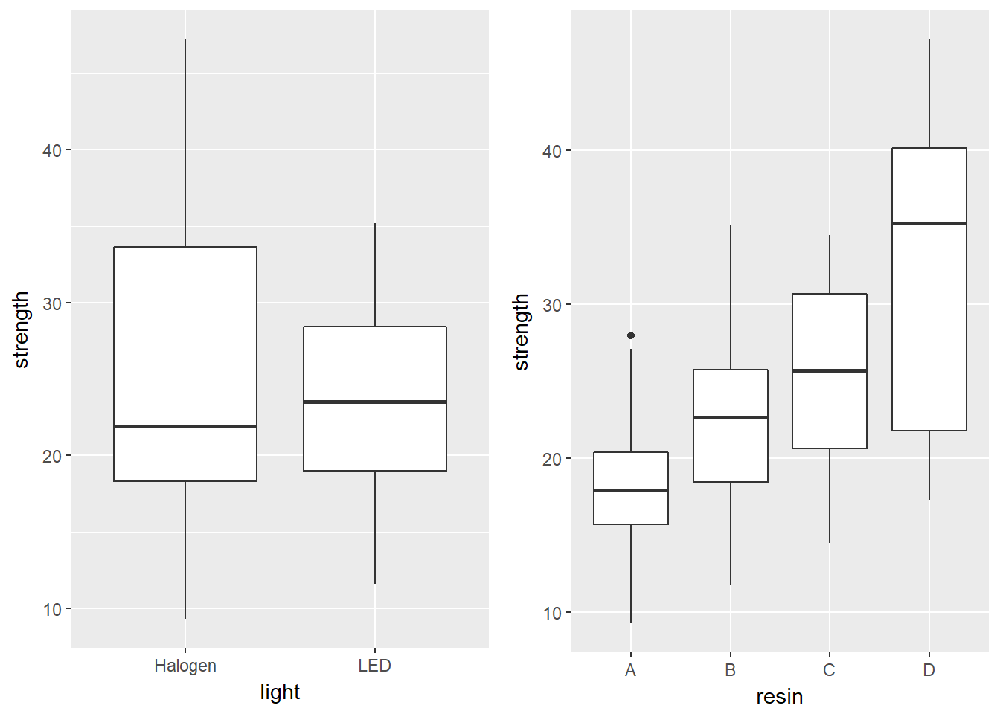

Chapter 3 The Analysis of Variance
3.1 The bonding data: A Designed Dental Experiment
The bonding data describe a designed experiment into the properties of four different resin types (resin = A, B, C, D) and two different curing light sources (light = Halogen, LED) as they relate to the resulting bonding strength (measured in MPa5) on the surface of teeth. The source is Kim (2014).
The experiment involved making measurements of bonding strength under a total of 80 experimental setups, or runs, with 10 runs completed at each of the eight combinations of a light source and a resin type. The data are gathered in the bonding.csv file.
bonding# A tibble: 80 x 4
run_ID light resin strength
<fct> <fct> <fct> <dbl>
1 R101 LED B 12.8
2 R102 Halogen B 22.2
3 R103 Halogen B 24.6
4 R104 LED A 17.0
5 R105 LED C 32.2
6 R106 Halogen B 27.1
7 R107 LED A 23.4
8 R108 Halogen A 23.5
9 R109 Halogen D 37.3
10 R110 Halogen A 19.7
# ... with 70 more rows3.1.1 Looking at the Data
We can look at the distribution of the strength values at the combinations of light and resin, with a plot like this one…
ggplot(bonding, aes(x = resin, y = strength, color = light)) +
geom_point(size = 2, alpha = 0.5) +
facet_wrap(~ light) +
guides(color = FALSE) +
scale_color_manual(values = c("purple", "darkorange")) +
theme_bw() 
3.1.2 A Means Plot (with standard deviations) to check for interaction
Sometimes, we’ll instead look at a plot simply of the means (and, often, the standard deviations) of strength at each combination of light and resin. We;ll start by building up a data set with the summaries we want to plot.
bond.sum <- bonding %>%
group_by(resin, light) %>%
summarize(mean.str = mean(strength), sd.str = sd(strength))
bond.sum# A tibble: 8 x 4
# Groups: resin [?]
resin light mean.str sd.str
<fct> <fct> <dbl> <dbl>
1 A Halogen 17.8 4.02
2 A LED 19.1 5.63
3 B Halogen 19.9 5.62
4 B LED 24.6 7.25
5 C Halogen 22.5 6.19
6 C LED 27.8 5.56
7 D Halogen 40.3 4.15
8 D LED 23.8 5.70Now, we’ll use this new data set to plot the means and standard deviations of strength at each combination of resin and light.
## The error bars will overlap unless we adjust the position.
pd <- position_dodge(0.2) # move them .1 to the left and right
ggplot(bond.sum, aes(x = resin, y = mean.str, col = light)) +
geom_errorbar(aes(ymin = mean.str - sd.str,
ymax = mean.str + sd.str),
width = 0.2, position = pd) +
geom_point(size = 2, position = pd) +
geom_line(aes(group = light), position = pd) +
scale_color_manual(values = c("purple", "darkorange")) +
theme_bw() +
labs(y = "Bonding Strength (MPa)", x = "Resin Type",
title = "Observed Means (+/- SD) of Bonding Strength")
Is there evidence of a meaningful interaction between the resin type and the light source on the bonding strength in this plot?
- Sure. A meaningful interaction just means that the strength associated with different
resintypes depends on thelightsource.- With LED
light, it appears thatresinC leads to the strongest bonding strength. - With Halogen
light, though, it seems thatresinD is substantially stronger.
- With LED
- Note that the lines we see here connecting the
lightsources aren’t in parallel (as they would be if we had zero interaction betweenresinandlight), but rather, they cross.
3.1.3 Skimming the data after grouping by resin and light
We might want to look at a numerical summary of the strengths within these groups, too.
bonding %>%
group_by(resin, light) %>%
skim(strength) Skim summary statistics
n obs: 80
n variables: 4
group variables: resin, light
Variable type: numeric
resin light variable missing complete n mean sd p0 p25 median
A Halogen strength 0 10 10 17.77 4.02 9.3 15.75 18.35
A LED strength 0 10 10 19.06 5.63 11.6 16.18 17.8
B Halogen strength 0 10 10 19.9 5.62 11.8 14.78 21.75
B LED strength 0 10 10 24.56 7.25 12.8 20.45 24.45
C Halogen strength 0 10 10 22.54 6.19 14.5 18.85 21.3
C LED strength 0 10 10 27.77 5.56 16.5 24.7 28.45
D Halogen strength 0 10 10 40.3 4.15 35.5 36.55 40.4
D LED strength 0 10 10 23.85 5.7 17.3 19.75 21.45
p75 p100
20 23.5
22.5 28
24.12 27.1
27.87 35.2
25.8 33
31.83 34.5
43.62 47.2
28.2 35.13.2 Fitting the Two-Way ANOVA model
3.2.1 With Interaction
c3_m1 <- lm(strength ~ resin * light, data = bonding)
summary(c3_m1)
Call:
lm(formula = strength ~ resin * light, data = bonding)
Residuals:
Min 1Q Median 3Q Max
-11.760 -3.663 -0.320 3.697 11.250
Coefficients:
Estimate Std. Error t value Pr(>|t|)
(Intercept) 17.770 1.771 10.033 2.57e-15 ***
resinB 2.130 2.505 0.850 0.3979
resinC 4.770 2.505 1.904 0.0609 .
resinD 22.530 2.505 8.995 2.13e-13 ***
lightLED 1.290 2.505 0.515 0.6081
resinB:lightLED 3.370 3.542 0.951 0.3446
resinC:lightLED 3.940 3.542 1.112 0.2697
resinD:lightLED -17.740 3.542 -5.008 3.78e-06 ***
---
Signif. codes: 0 '***' 0.001 '**' 0.01 '*' 0.05 '.' 0.1 ' ' 1
Residual standard error: 5.601 on 72 degrees of freedom
Multiple R-squared: 0.6149, Adjusted R-squared: 0.5775
F-statistic: 16.42 on 7 and 72 DF, p-value: 9.801e-133.2.2 The ANOVA table for our model
In a two-way ANOVA model, we begin by assessing the interaction term. If it’s important, then our best model is the model including the interaction. If it’s not important, we will often move on to consider a new model, fit without an interaction.
The ANOVA table is especially helpful in this case, because it lets us look specifically at the interaction effect.
anova(c3_m1)Analysis of Variance Table
Response: strength
Df Sum Sq Mean Sq F value Pr(>F)
resin 3 1999.72 666.57 21.2499 5.792e-10 ***
light 1 34.72 34.72 1.1067 0.2963
resin:light 3 1571.96 523.99 16.7043 2.457e-08 ***
Residuals 72 2258.52 31.37
---
Signif. codes: 0 '***' 0.001 '**' 0.01 '*' 0.05 '.' 0.1 ' ' 13.2.3 Is the interaction important?
In this case, the interaction:
- is evident in the means plot, and
- is highly statistically significant, and
- accounts for a sizeable fraction (27%) of the overall variation
\[ \eta^2_{interaction} = \frac{\mbox{SS(resin:light)}}{SS(Total)} = \frac{1571.96}{1999.72 + 34.72 + 1571.96 + 2258.52} = 0.268 \]
If the interaction were either large or significant we would be inclined to keep it in the model. In this case, it’s both, so there’s no real reason to remove it.
3.2.4 Interpreting the Interaction
Recall the model equation, which is:
c3_m1
Call:
lm(formula = strength ~ resin * light, data = bonding)
Coefficients:
(Intercept) resinB resinC resinD
17.77 2.13 4.77 22.53
lightLED resinB:lightLED resinC:lightLED resinD:lightLED
1.29 3.37 3.94 -17.74 so we have:
\[ strength = 17.77 + 2.13 resinB + 4.77 resinC + 22.53 resinD \\ + 1.29 lightLED + 3.37 resinB*lightLED \\ + 3.94 resinC*lightLED - 17.74 resinD*lightLED \]
So, if light = Halogen, our equation is:
\[ strength = 17.77 + 2.13 resinB + 4.77 resinC + 22.53 resinD \]
And if light = LED, our equation is:
\[ strength = 19.06 + 5.50 resinB + 8.71 resinC + 4.79 resinD \]
Note that both the intercept and the slopes change as a result of the interaction. The model yields a different prediction for every possible combination of a resin type and a light source.
3.2.5 Comparing Individual Combinations of resin and light
To make comparisons between individual combinations of a resin type and a light source, using something like Tukey’s HSD approach for multiple comparisons, we first refit the model using the aov structure, rather than lm.
c3m1_aov <- aov(strength ~ resin * light, data = bonding)
summary(c3m1_aov) Df Sum Sq Mean Sq F value Pr(>F)
resin 3 1999.7 666.6 21.250 5.79e-10 ***
light 1 34.7 34.7 1.107 0.296
resin:light 3 1572.0 524.0 16.704 2.46e-08 ***
Residuals 72 2258.5 31.4
---
Signif. codes: 0 '***' 0.001 '**' 0.01 '*' 0.05 '.' 0.1 ' ' 1And now, we can obtain Tukey HSD comparisons (which will maintain an overall 95% family-wise confidence level) across the resin types, the light sources, and the combinations, with the TukeyHSD command. This approach is only completely appropriate if these comparisons are pre-planned, and if the design is balanced (as this is, with the same sample size for each combination of a light source and resin type.)
TukeyHSD(c3m1_aov) Tukey multiple comparisons of means
95% family-wise confidence level
Fit: aov(formula = strength ~ resin * light, data = bonding)
$resin
diff lwr upr p adj
B-A 3.815 -0.843129 8.473129 0.1461960
C-A 6.740 2.081871 11.398129 0.0016436
D-A 13.660 9.001871 18.318129 0.0000000
C-B 2.925 -1.733129 7.583129 0.3568373
D-B 9.845 5.186871 14.503129 0.0000026
D-C 6.920 2.261871 11.578129 0.0011731
$light
diff lwr upr p adj
LED-Halogen -1.3175 -3.814042 1.179042 0.2963128
$`resin:light`
diff lwr upr p adj
B:Halogen-A:Halogen 2.13 -5.68928258 9.949283 0.9893515
C:Halogen-A:Halogen 4.77 -3.04928258 12.589283 0.5525230
D:Halogen-A:Halogen 22.53 14.71071742 30.349283 0.0000000
A:LED-A:Halogen 1.29 -6.52928258 9.109283 0.9995485
B:LED-A:Halogen 6.79 -1.02928258 14.609283 0.1361092
C:LED-A:Halogen 10.00 2.18071742 17.819283 0.0037074
D:LED-A:Halogen 6.08 -1.73928258 13.899283 0.2443200
C:Halogen-B:Halogen 2.64 -5.17928258 10.459283 0.9640100
D:Halogen-B:Halogen 20.40 12.58071742 28.219283 0.0000000
A:LED-B:Halogen -0.84 -8.65928258 6.979283 0.9999747
B:LED-B:Halogen 4.66 -3.15928258 12.479283 0.5818695
C:LED-B:Halogen 7.87 0.05071742 15.689283 0.0473914
D:LED-B:Halogen 3.95 -3.86928258 11.769283 0.7621860
D:Halogen-C:Halogen 17.76 9.94071742 25.579283 0.0000000
A:LED-C:Halogen -3.48 -11.29928258 4.339283 0.8591455
B:LED-C:Halogen 2.02 -5.79928258 9.839283 0.9922412
C:LED-C:Halogen 5.23 -2.58928258 13.049283 0.4323859
D:LED-C:Halogen 1.31 -6.50928258 9.129283 0.9995004
A:LED-D:Halogen -21.24 -29.05928258 -13.420717 0.0000000
B:LED-D:Halogen -15.74 -23.55928258 -7.920717 0.0000006
C:LED-D:Halogen -12.53 -20.34928258 -4.710717 0.0001014
D:LED-D:Halogen -16.45 -24.26928258 -8.630717 0.0000002
B:LED-A:LED 5.50 -2.31928258 13.319283 0.3665620
C:LED-A:LED 8.71 0.89071742 16.529283 0.0185285
D:LED-A:LED 4.79 -3.02928258 12.609283 0.5471915
C:LED-B:LED 3.21 -4.60928258 11.029283 0.9027236
D:LED-B:LED -0.71 -8.52928258 7.109283 0.9999920
D:LED-C:LED -3.92 -11.73928258 3.899283 0.7690762One conclusion from this is that the combination of D and Halogen is significantly stronger than each of the other seven combinations.
3.2.6 The Model without Interaction
It seems incorrect in this situation to fit a model without the interaction term, but we’ll do so just so you can see what’s involved.
c3_m2 <- lm(strength ~ resin + light, data = bonding)
summary(c3_m2)
Call:
lm(formula = strength ~ resin + light, data = bonding)
Residuals:
Min 1Q Median 3Q Max
-14.1163 -4.9531 0.1187 4.4613 14.4663
Coefficients:
Estimate Std. Error t value Pr(>|t|)
(Intercept) 19.074 1.787 10.676 < 2e-16 ***
resinB 3.815 2.260 1.688 0.09555 .
resinC 6.740 2.260 2.982 0.00386 **
resinD 13.660 2.260 6.044 5.39e-08 ***
lightLED -1.317 1.598 -0.824 0.41229
---
Signif. codes: 0 '***' 0.001 '**' 0.01 '*' 0.05 '.' 0.1 ' ' 1
Residual standard error: 7.147 on 75 degrees of freedom
Multiple R-squared: 0.3469, Adjusted R-squared: 0.312
F-statistic: 9.958 on 4 and 75 DF, p-value: 1.616e-06In the no-interaction model, if light = Halogen, our equation is:
\[ strength = 19.07 + 3.82 resinB + 6.74 resinC + 13.66 resinD \]
And if light = LED, our equation is:
\[ strength = 17.75 + 3.82 resinB + 6.74 resinC + 13.66 resinD \]
So, in the no-interaction model, only the intercept changes.
anova(c3_m2)Analysis of Variance Table
Response: strength
Df Sum Sq Mean Sq F value Pr(>F)
resin 3 1999.7 666.57 13.0514 6.036e-07 ***
light 1 34.7 34.72 0.6797 0.4123
Residuals 75 3830.5 51.07
---
Signif. codes: 0 '***' 0.001 '**' 0.01 '*' 0.05 '.' 0.1 ' ' 1And, it appears, if we ignore the interaction, then resin type has a significant impact on strength but light source doesn’t. This is a bit clearer, when we look at boxplots of the separated light and resin groups.
Thanks to the patchwork package in R, we can do this by simply building the plots, and then adding them together.
p1 <- ggplot(bonding, aes(x = light, y = strength)) +
geom_boxplot()
p2 <- ggplot(bonding, aes(x = resin, y = strength)) +
geom_boxplot()
gridExtra::grid.arrange(p1, p2, nrow = 1)
```
References
Kim, Hae-Young. 2014. “Statistical Notes for Clinical Researchers: Two-Way Analysis of Variance (Anova) - Exploring Possible Interaction Between Factors.” Restorative Dentistry & Endodontics 39(2): 143–47. https://www.ncbi.nlm.nih.gov/pmc/articles/PMC3978106/.
The MPa is defined as the failure load (in Newtons) divided by the entire bonded area, in mm2.↩